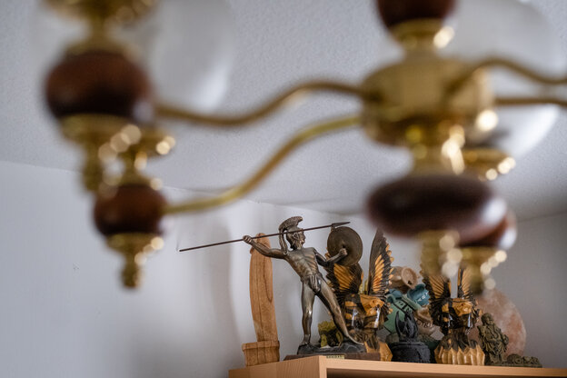
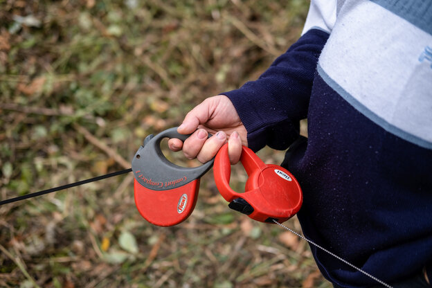
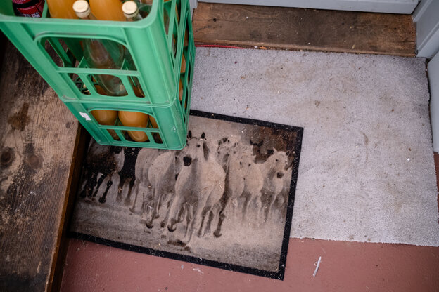

Foto: Bernd Hartung
Mein pädophiler Onkel:Bestraft und nicht geläutert
Der Onkel unseres Autors ist ein verurteilter Pädophiler. Wie kann man mit ihm umgehen?, fragt der Autor. Und wie verhindern, dass er rückfällig wird?
14.11.2020, 13:42 UHR
Kurz bevor ich am Haus meines Onkels ankomme, sehe ich ihn mit seinen zwei Chihuahuas vor die Tür treten. Die Hunde tapsen auf die Wiese neben dem Fußweg und pinkeln an einen Baum. Mein Onkel trägt eine Brille mit Metallrahmen und kleinen ovalen Gläsern. Unter einem hellblauen Hemd wölbt sich sein Bauch. Er hat kurze graue Haare und Geheimratsecken. Ich glaube, er hat mich schon gesehen, aber er hält den Kopf gesenkt und spricht mit den Hunden.
Erst als ich fast neben ihm stehe, dreht er sich zu mir. „Na, hallo“, sagt er. Er ist klein, reicht mir bis zur Schulter. Wie meine Mutter, seine Zwillingsschwester. Ich sehe sie in seinem glatt rasierten Gesicht. Und irgendwie auch mich.
Ein paar Minuten später sitze ich mit meinem Onkel auf dem Sofa in seinem Wohnzimmer. Neben mir wirbeln in einem Käfig zwei Zebrafinken Federn und Sand auf. Die zwei Chihuahuas laufen hechelnd umher, ihre Pfoten klackern leise auf dem Linoleum. Im Zimmer riecht es nach Hundefutter, das in drei Glasschüsseln neben der Tür steht.
So gut wie jeder Quadratzentimeter des Raums ist zugestellt: Kerzen, ein Zimmerspringbrunnen aus kleinen Terrakottakrügen, das Gipsmodell eines muskulösen Männertorsos, eine Lampe in Form eines riesigen Penis. Der Schreibtisch an einer Wand des Wohnzimmers ist überladen mit staubigen Elektrogeräten, Kabeln und Post. Auf den Bildschirm des PCs ist eine Webcam gesteckt. Vor dem PC steht ein blauer Lederstuhl, auf dem ein speckig aussehendes dunkles Handtuch liegt.
In der taz am wochenende vom 14./15. November lesen Sie das: Der Onkel unseres Autors ist ein verurteilter Pädophiler, Therapien lehnt er ab. Wer verhindert, dass er wieder Kinder missbraucht? Außerdem: Nach der US-Wahl ist bei den Demokraten Streit ausgebrochen. Was heißt das für Joe Biden? Und: Bloß nicht authentisch sein! Die Kabarettistin Lisa Eckhart verteidigt die Künstlichkeit gegen den Anspruch, einfach man selbst zu sein. Ab Samstag am Kiosk, im eKiosk, im Wochenendabo und bei Facebook und Twitter.
Auf dem niedrigen Holztisch vor mir und meinem Onkel stapeln sich Aktenordner. In ihnen hat er Jahrzehnte seines Lebens abgeheftet. Auf einem der Ordner klebt ein Bild von Aaron Carter, der als Kind Ende der neunziger Jahre einige Hits hatte. Auf dem Bild blickt der Junge nachdenklich in die Kamera. Seine blonden mittellangen Haare hängen ihm ins Gesicht. Er trägt eine Jeanslatzhose, der Oberkörper darunter ist nackt.
Aufgeschlagen auf dem Tisch liegt eine Anklageschrift der Staatsanwaltschaft von November 1997. Auf 11 Seiten sind 33 Fälle von Kindesmissbrauch aufgelistet. Die Opfer: 15 Jungen im Alter zwischen 11 und 15 Jahren. Der Täter: mein Onkel. „In der Wohnung des Angeschuldigten muss es zeitweise zugegangen sein wie in einem Taubenschlag“, steht da über ihn. Nicht alle Kinder und Jugendlichen, die er misshandelt hat, hätten ermittelt werden können. „Es kann davon ausgegangen werden, dass die angeklagten Fälle nur die Spitze eines Eisberges darstellen“, schreibt die Staatsanwaltschaft.
Über das Zitat mit der Spitze des Eisbergs muss mein Onkel lachen. „Ist ja klar, nicht alle Jungs haben damals ausgesagt, nur die, die sie durch Ermittlungen herausgefunden haben“, sagt er. Seine Bude sei immer voll gewesen. Er spricht wie ein arroganter Aufreißer. Wie so oft an diesem Tag sage ich ihm, dass mich seine Worte fassungslos und wütend machen. Und wie so oft an diesem Tag zuckt mein Onkel etwas ratlos mit den Schultern und schaut mich mit hochgezogenen Augenbrauen an, so als wolle er sagen: „Was soll ich da machen? Kann ich nichts für.“
Der Autor besuchte seinen Onkel im Sommer vergangenen Jahres. Die Bilder sind jetzt entstanden. Die Hunde auf dem Foto sind nicht dieselben wie beim Besuch unseres Autors Foto: Bernd Hartung
Sieben Stunden bin ich mit dem Zug quer durch Deutschland gefahren, um mit dem Mann zu sprechen, über den in meiner Familie niemand spricht. Ich habe meinen Onkel das letzte Mal gesehen, als ich ein Kleinkind war. Heute bin ich 29. Mein Onkel ist 57. Und pädophil. Er war wegen sexuellen Kindesmissbrauchs und wegen Besitz von Kindesmissbrauchsabbildungen dreimal im Gefängnis.
Mein Onkel ist der Mann, an den ich bei Nachrichten über sexuellen Kindesmissbrauch und pädokriminelle Netzwerke wie in Lügde, Münster und Bergisch Gladbach denken muss. Ich muss an meinen Onkel denken, wenn ich lese, dass der arbeitslose Camper Andreas V. in Lügde eine Pflegetochter hatte, obwohl es Hinweise darauf gab, dass er pädophil sein könnte. Ich muss an meinen Onkel denken, wenn ich lese, dass der 27-jährige Hauptverdächtige im Fall Münster wegen Verbreitung und Besitz von Kindesmissbrauchsabbildungen bereits vorbestraft war.
Die aktuelle Häufung aufgedeckter Fälle von sexuellem Kindesmissbrauch setzt die Politik unter Druck. Bundesjustizministerin Christine Lambrecht will härter gegen pädosexuelle Straftäter*innen vorgehen und die Strafen für sexuellen Kindesmissbrauch und die Verbreitung und den Besitz von Missbrauchsabbildungen verschärfen.
Ein Gesetzentwurf zur Bekämpfung sexualisierter Gewalt gegen Kinder, den die Bundesregierung Ende Oktober beschlossen hat, sieht unter anderem vor, Verbreitung und Besitz von Missbrauchsabbildungen mit längeren Freiheitsstrafen zu ahnden und die Anordnung von Untersuchungshaft bei schwerer sexualisierter Gewalt gegen Kinder zu erleichtern. Expert*innen kritisieren aber, dass härtere Strafen keine präventive Wirkung hätten.
Meinen Onkel haben Strafen jahrzehntelang nicht abgeschreckt. Er sagt, es gebe einvernehmlichen Sex mit Kindern, seine Pädophilie müsse nicht therapiert werden. Er ist ein Mann, der auf verlorenem Posten kämpft, angefeindet wird, ein Leben im Abseits führt.
Foto: Bernd Hartung
Ich habe ihn besucht, um herauszufinden, was ein pädosexueller Straftäter wie er denkt und fühlt. Und wie ein Mann lebt, den das Ausleben seiner sexuellen Neigung immer wieder ins Gefängnis bringt. Zum Schutz meines Onkels und anderer Beteiligter sind einige Details in diesem Text verändert.
Den Autor lässt die Begegnung nicht los
Es ist mir nicht leichtgefallen, all das aufzuschreiben. Seit dem Treffen mit meinem Onkel ist über ein Jahr vergangen. In dieser Zeit habe ich immer wieder versucht, meine Gedanken über ihn, seine Taten und seine Ansichten zu ordnen und zu Papier zu bringen. Doch ich wusste lange nicht, wie. Ich wollte keinen Text schreiben, der die ohnehin schon verbreitete Stigmatisierung von Pädophilen verstärkt. Ich wollte auch keine Homestory über einen gruseligen Verbrecher schreiben. Wenn mein Onkel ein Mann wäre, der seine Taten bereute und sich therapieren ließe, wäre dieser Text wahrscheinlich nicht entstanden. Doch weil mein Onkel kein solcher Mann ist, habe ich keine Ruhe gefunden.
Seit dem Treffen mit ihm verfolgt mich vor allem eine Frage: Was wird in Deutschland unternommen, um Männer wie ihn, die offen zu ihrer Pädophilie stehen, Therapien ablehnen und vorbestraft sind, davon abzuhalten, erneut Kinder zu missbrauchen?
Dass mein Onkel kein Pädophiler ist, der gegen seine Neigung kämpft und alles versucht, um Kindern nicht zu schaden, weiß ich aus einem Manifest, das er Ende der neunziger Jahre im Gefängnis schrieb. Auf 40 Seiten argumentiert er für die Streichung des Paragrafen 176 des Strafgesetzbuchs, in dem die Strafen für sexuellen Missbrauch von Kindern unter 14 Jahren festgeschrieben sind. Gegen Pädophile finde ein „Holocaust“ statt, die Altersgrenzen im Sexualstrafrecht seien willkürlich, Kinder seien eigenständige Personen mit Recht auf eine selbstbestimmte Sexualität, schreibt er darin.
Vor einigen Jahren schickte er das Manifest meiner Mutter, die es mir gab. Es gab mir zum ersten Mal einen Einblick in die Gedankenwelt meines Onkels. Ich wusste also, was mich bei einem Gespräch mit ihm erwartet.
Die Anklageschrift, die im Sommer 2019 vor mir und meinem Onkel auf dem Wohnzimmertisch liegt, brachte ihn fünf Jahre ins Gefängnis. Die Jungen, die er missbrauchte, lernte er in einem Kino kennen. Dort arbeitete er mit Anfang 30 als Filmvorführer. Er sprach die Jungen an, lud sie zu sich nach Hause ein. Sie hätten bei ihm Fernsehen schauen und toben können. Ein paar von ihnen brachten Freunde mit. Mein Onkel zeigte ihnen Pornos, befriedigte sie dabei oral, ließ sich von ihnen oral befriedigen. Vier bis fünf Jahre ging das so. Es seien viele Jungen gewesen, deren Eltern sich nicht wirklich um sie gekümmert hätten, sagt mein Onkel. Bei ihm hätten sie sich wohlgefühlt.
„Du hast die Jungen ausgenutzt“, sage ich zu meinem Onkel. „Sie haben bei dir die Zuneigung gesucht, die sie von ihren Eltern nicht bekommen haben.“ Er verneint das nicht. „Die Ausnutzung war gegenseitig“, sagt er. Die Jungen hätten meinen Onkel „fummeln“ lassen und dafür bei ihm in der Wohnung machen können, was sie wollten. Er habe nie etwas gegen den Willen der Jungen gemacht, nie Gewalt angewendet. Darauf beruht für meinen Onkel die Rechtfertigung seiner Taten: Sex mit einem Kind ohne Gewaltanwendung ist für ihn kein Missbrauch. „Für die meisten Menschen ist es Gewalt gegen Kinder, mit ihnen Sex zu haben“, sage ich. „Das ist ja das Problem“, sagt mein Onkel. Sex zwischen einem Jungen und einem Mann werde von der Gesellschaft besonders kritisch gesehen. „Wenn ein 13-Jähriger mit einer Frau schläft, regt sich keiner auf“, sagt er. Der stoße sich dann einfach die Hörner ab.
Anna Konrad ist Sexual- und Psychotherapeutin und arbeitet mit pädophilen Menschen. Konrads Patient*innen sind überwiegend männlich, leiden unter ihren sexuellen Fantasien von Kindern und wollen keinen sexuellen Missbrauch begehen. In der Therapie bearbeitet Konrad mit ihnen unter anderem sogenannte missbrauchbegünstigende Einstellungen, die zum Beispiel sexuelle Kontakte zwischen Erwachsenen und Kindern verharmlosen und ein Hauptrisikofaktor für das Begehen von sexuellem Missbrauch sind. Die Behauptung meines Onkels, die Gesellschaft und nicht er selbst habe eine fragwürdige Meinung über Sex zwischen Männern und Jungen, ist eine solche missbrauchbegünstigende Einstellung.
Für Konrads Patient*innen ist die Auseinandersetzung mit ihren eigenen Überzeugungen herausfordernd. „Ein Anerkennen, dass ihre Ansichten falsch sind, kann bedeuten, dass ihr ganzes Selbstbild zusammenbricht“, sagt die 39-Jährige. Zu sagen, die Gesellschaft und nicht man selbst habe falsche Ansichten, sei ein psychologisch nachvollziehbarer Schutzmechanismus.
Konrad arbeitet seit 15 Jahren für das Präventionsnetzwerk „Kein Täter werden“ an der Charité-Universitätsmedizin Berlin. Das Netzwerk mit bundesweit 11 Standorten will Menschen, die sich sexuell zu Kindern hingezogen fühlen, ein zufriedenes Leben ermöglichen und sexuelle Gewalt an Kindern verhindern. Deutschlandweit haben bisher rund 11.000 Männer und Frauen das Netzwerk kontaktiert.
„Du hast die Jungen ausgenutzt“, sage ich zu meinem Onkel. Er verneint das nicht. „Die Ausnutzung war gegenseitig“, sagt er
Voraussetzung für eine Aufnahme in das Programm und eine erfolgreiche Therapie ist, dass die Suche nach Hilfe aus eigener Motivation erfolgt. Manche Männer wenden sich zum Beispiel nicht aus eigenem Antrieb an „Kein Täter werden“, sondern weil ihre Partner:innen Missbrauchsabbildungen auf ihren PCs gefunden haben. Eine Therapie habe dann unter Umständen keinen Sinn, sagt Konrad. „Man kann niemanden zwingen, sich mit sich selbst auseinanderzusetzen.“
Im Sommer vor einem Jahr gehen mein Onkel und ich in einem Park in der Nähe seiner Wohnung spazieren. Die beiden Chihuahuas laufen angeleint voraus.
„Das Schöne an Hunden ist, dass immer jemand da ist, der sich freut, wenn man nach Hause kommt“, sagt mein Onkel. Die Hunde würden in seinem Bett schlafen, das binde ungemein. Bindung, und Nähe hat er in unserer Familie kaum erfahren. „Das, was ich selbst erlebt habe, würde ich einem anderen Kind nie antun“, sagt er.
In meiner Kindheit hörte ich auf Familienfeiern, zu denen mein Onkel nie eingeladen war, meine Mutter und ihre Geschwister oft von der Gewalt reden, der sie als Kinder ausgesetzt waren. Dass mein Großvater sie mit einer Hundepeitsche verprügelte, war immer wieder Thema. Mein Onkel sagt, er habe am meisten abbekommen. Als er 15 war, habe mein Großvater ihm Zähne ausgeschlagen. Einmal habe ein Sportlehrer meinen Großvater wegen der Striemen auf dem Körper meines Onkels angesprochen, doch passiert sei nichts. Für die Misshandlung seiner Kinder wurde mein Großvater nie zur Verantwortung gezogen. Meine Großmutter sei so gut wie nie eingeschritten. „Was für eine Familie!“, sagt mein Onkel. „Da bin ich noch der Harmloseste. Und ich bin der, der im Gefängnis war.“
Niemand verlasse die Wohnung, solange ihm keiner einen runterhole, soll mein Onkel gesagt haben. Einer der Jungen habe ihn schließlich mit der Hand befriedigt
Meine Mutter bestätigt, dass mein Onkel von ihren vier Geschwistern am meisten unter dem Sadismus meines Großvaters zu leiden hatte. „Wenn er mal wieder Prügel gekriegt hat, bin ich schnell in irgendein Zimmer gerannt und habe mir die Ohren zugehalten, damit ich ihn nicht schreien hörte“, sagt sie. Vor allem der Tag, an dem mein Onkel die Hundepeitsche versteckt hat, ist ihr in Erinnerung geblieben. Als er meinem Großvater nicht verriet, wo die Peitsche war, habe dieser eine Nadel genommen, meinem Onkel den Mund zugehalten und seinen Po zerstochen. Die Großmutter meiner Mutter habe nach diesem Vorfall meinen Großvater anzeigen wollen. Aus Angst, dass er dann ins Gefängnis komme, habe sie es jedoch nicht getan.
Von der Pädophilie meines Onkels hat meine Mutter nach einer seiner Verurteilungen erfahren. Von seinen konkreten Taten und drei Haftstrafen hört sie zum ersten Mal von mir. Sie wusste nur von einer Haftstrafe. „Ich hätte nie gedacht, dass er so was macht“, sagt sie.
Meine Mutter wurde selbst als Kind vom Lebensgefährten ihrer Großmutter und einem Onkel sexuell missbraucht. Kontakt hat sie kaum zu meinem Onkel. Manchmal schreiben sich die beiden über Whatsapp, sehr selten telefonieren sie. „Ich bin einfach froh, wenn es ihm gut geht“, sagt meine Mutter. „Er ist ja schließlich mein Zwillingsbruder.“
Mein Onkel verließ seine Familie, sobald er die Möglichkeit dazu hatte. Er diente sieben Jahre in der Nationalen Volksarmee der DDR, machte eine Ausbildung zum Maurer und brach noch am Tag der Grenzöffnung in Richtung Westdeutschland auf. Seitdem war er nicht mehr in seiner Heimat.
Anfang der neunziger Jahre, mein Onkel war Anfang 30, wurde ihm sein Job inklusive Zimmer auf einem Bauhof gekündigt. Er zog in eine Pension, wo auch Familien mit ihren Kindern lebten, und missbrauchte dort Jungen. Einer von ihnen erzählte seinen Eltern davon, und mein Onkel wurde zum ersten Mal wegen sexuellen Kindesmissbrauchs verurteilt. Bis zur Urteilsverkündung saß er ein halbes Jahr in Untersuchungshaft. Den Rest der zweijährigen Freiheitsstrafe setzte das Gericht zur Bewährung aus.
Die Jahre danach lebte mein Onkel in einer Wohngruppe für Straffällige, in einem Obdachlosenheim, bei Bekannten. Er bezog lange Hartz IV, war bei Zeitarbeitsfirmen angestellt, arbeitete als Lagerlogistiker. Dazwischen war er zweimal jeweils mehrere Jahre im Gefängnis, zuletzt von 2006 bis 2009.
Als die Polizei 2006 Missbrauchsabbildungen auf dem Computer meines Onkels fand, musste er noch Bewährungsauflagen einer vorherigen Haftstrafe erfüllen. Er war zum Beispiel verpflichtet, sich regelmäßig bei einem Bewährungshelfer zu melden, und durfte keine Kinder in seiner Wohnung haben. Der Besitz der Missbrauchsabbildungen und der Verstoß gegen die Bewährungsauflagen brachten ihn wieder direkt ins Gefängnis.
Andrea Frauendorfer arbeitet seit 30 Jahren mit straffällig gewordenen Menschen. Sie ist leitende Bewährungshelferin für das Landgericht Landshut in Bayern. Zurzeit betreut sie rund 45 Personen, die sie einmal im Monat für jeweils eine Stunde trifft. 10 von ihnen sind pädosexuelle Männer, die Kinder sexuell missbraucht haben. „Die meisten ticken so wie Ihr Onkel“, sagt mir Frauendorfer bei einem Telefonat. Es seien Männer, die behaupten, dass sie Kinder lieben, und nichts Falsches an ihren Taten sehen. „Solche Fälle sind schwierig, weil die Männer keine Motivation haben, sich zu ändern“, sagt die 55-Jährige.
Foto: Bernd Hartung
Die Bewährungsauflagen, die pädosexuelle Straftäter*innen nach ihrer Haft erfüllen müssen, seien von Fall zu Fall unterschiedlich. Bei der Festlegung der Auflagen spiele Frauendorfer zufolge zum Beispiel eine Rolle, wie der Kontakt zu den missbrauchten Kindern angebahnt wurde und ob es bereits Vorstrafen gab.
Wenn jemand über viele Jahre Kinder missbraucht hat, treffen sich vor der Haftentlassung Polizei, Bewährungshelfer*innen, Führungsaufsichtsstelle und Staatsanwaltschaft und legen gemeinsam die Bewährungsauflagen fest. Außerdem gibt es für als gefährlich eingestufte Personen die sogenannte elektronische Aufenthaltsüberwachung, eine elektronische Fußfessel, die per GPS den Standort von aus der Haft entlassenen Straftätern*innen kontrolliert. „Zurzeit habe ich mehrere, die so einen Kasten tragen“, sagt Frauendorfer. Nähert sich ein wegen sexuellen Kindesmissbrauchs verurteilter Mann einem für ihn als Verbotszone festgelegten Ort, etwa einem Kindergarten, bekommen die Bewährungshelferin und die Polizei sofort eine Meldung.
Für manche pädosexuellen Straftäter*innen wird nach einer Haftstrafe Sicherungsverwahrung angeordnet. Bereits zwei Vergehen gegen die sexuelle Selbstbestimmung von Kindern können für eine Anordnung der Sicherungsverwahrung ausreichen. Bei besonders schweren Verbrechen, die zu einer Freiheitsstrafe von mindestens fünf Jahren führen, kann schon ein Ersttäter in Sicherungsverwahrung kommen.
Um diese schwerwiegendste Sanktion im deutschen Strafrecht verhängen zu können, muss festgestellt werden, dass der Täter wegen eines Hangs zu erheblichen Straftaten, die die Opfer seelisch oder körperlich schwer schädigen, für die Allgemeinheit gefährlich ist.
Mein Onkel sagt, er habe keine Gewalt angewandt
Mein Onkel sagt, für ihn hätten die Gerichte bisher Sicherungsverwahrung nicht in Betracht gezogen, weil er nie Gewalt gegen die Jungen, die er missbraucht hat, angewendet habe. Die Sicherungsverwahrung dauert so lange an, wie eine Person noch als gefährlich gilt. Sie kann auch bis zum Tod vollstreckt werden. Ob jemand weiterhin eine Gefahr für die Allgemeinheit darstellt und damit die Voraussetzung für die Sicherungsverwahrung weiterbesteht, müssen Gerichte jährlich überprüfen.
Eine der Aufgaben von Bewährungshelferin Andrea Frauendorfer ist es, dafür zu sorgen, dass ihre Proband*innen, wie es im Justizdeutsch heißt, keine Gefahr für die Allgemeinheit bleiben. „Die Wahrscheinlichkeit, dass jemand wieder eine Straftat begeht und auf alte Verhaltensweisen zurückgreift, ist größer, wenn es der Person psychisch nicht gut geht“, erklärt Frauendorfer.
Dafür zu sorgen, dass ihre Proband*innen eine Wohnung und einen Job haben, sei deshalb sehr wichtig, weil das Stabilität bringe. Das gelte auch für Therapien. Für pädosexuelle Straftäter*innen sind sie oftmals eine Auflage nach der Haftentlassung. Zwingen könne man dazu aber niemanden. „Wenn ein Proband nur den Termin einhält, aber nicht viel spricht, ist das rechtlich nicht zu beanstanden“, sagt die Bewährungshelferin.
Mein Onkel hat die 80 Stunden Therapie, die er nach einer seiner Haftstrafen verordnet bekam, einfach abgesessen. Der Therapeut habe meinem Onkel zufolge versucht, ihn davon zu überzeugen, dass seine Einstellung zu Sex mit Kindern falsch sei. Geschafft hat er das nicht. „Ich bin mit der Einstellung dorthin, dass ich keine Therapie brauche“, sagt mein Onkel. Das habe auch der Therapeut gemerkt.
Als die Polizei 2006 den PC meines Onkels konfiszierte, fand sie auf ihm Filme, in denen Jungen im Alter zwischen 12 und 14 Jahren Sex miteinander und mit Erwachsenen haben. Er selbst habe nie Filme aufgenommen, Gewaltvideos schaue er sich generell nicht an, sagt mein Onkel. Auf meinen wiederholten Einwand, dass jegliche sexuelle Handlung mit Kindern Gewalt sei, antwortet er, er könne ja nicht nachvollziehen, unter welchen Umständen die Filme zustande gekommen seien und dass man bei manchen Jungen gesehen habe, dass es ihnen Spaß mache.
Ich kann mir kaum vorstellen, dass ein pädophiler Mann mit dieser Einstellung sich nicht wieder strafbar macht oder es schon unentdeckt getan hat. Mein Onkel würde mir natürlich nichts erzählen, was ihn in Schwierigkeiten bringen könnte. Er sagt, er habe sich damit abgefunden, seine Neigung in seiner Fantasie auszuleben. Das bedrücke ihn, aber es gehe ja nicht anders. Er habe niemanden, mit dem er über dieses Thema sprechen könne. Man könne ohnehin nirgends öffentlich über Pädophilie reden.
„Es gibt keine Lobby für mich, ich bin auf verlorenem Posten“, sagt mein Onkel. Vor einigen Jahrzehnten sei das noch anders gewesen. Die Grünen und die Schwulenbewegung hätten sich ja leider irgendwann von dem Thema distanziert.
Foto: Bernd Hartung
Mein Onkel spielt auf Teile des linksalternativen Milieus an, das in den siebziger und achtziger Jahren Straffreiheit für sexuelle Handlungen mit Kindern forderte. Im gesellschaftlichen Klima der sexuellen Revolution wurden alle Tabus infrage gestellt, was pädophilen Aktivist*innen Auftrieb verschaffte. Sie organisierten sich unter anderem bei den Grünen.
So fanden etwa 1981 Forderungen nach Freistellung von der strafrechtlichen Verfolgung sexueller Handlungen zwischen Kindern und Erwachsenen, die gewaltfrei zustande kommen, Eingang in das Wahlprogramm der Alternativen-Grünen-Initiativen-Liste in Göttingen. Der ehemalige Grünen-Chef Jürgen Trittin war mitverantwortlich für dieses Wahlprogramm.
Mein Onkel sieht sich als Kämpfer gegen Diskriminierung
Auch die taz, die sich als Sprachrohr für abweichende Meinungen verstand, veröffentlichte in dieser Zeit Texte von Menschen, die für die Anerkennung von Pädophilie als gleichberechtigte sexuelle Neigung warben. Mein Onkel sieht sich in der Tradition dieser Aktivist*innen, als Kämpfer gegen die Diskriminierung von Pädophilen, der heute keine Unterstützung mehr erwarten kann.
Kämpfen muss mein Onkel auch an anderer Front. Vor mehreren Jahren verschwand in der Stadt, in der er wohnt, ein achtjähriger Junge. Am nächsten Tag wurde das Kind tot in einem Bach gefunden. Bei der Polizei meldete sich ein anonymer Anrufer, der meinen Onkel des Mordes an dem Jungen bezichtigte. Polizisten*innen durchsuchten seine Wohnung, die Nachbar*innen erfuhren den Grund der Durchsuchung. Sie hätten vor dem Haus gestanden und gesagt, sie würden das Geständnis aus meinem Onkel herausprügeln.
Für die Polizei sei mein Onkel nie als Täter infrage gekommen, sagt er. Er habe nicht ins Profil gepasst. Die Polizei riet ihm, für ein paar Wochen unterzutauchen. Er zog für kurze Zeit zu einem Bekannten in die Schweiz.
Die Anfeindungen gegen meinen Onkel dauern an. Eine Frau aus der Nachbarschaft boxte ihm durch das offene Autofenster ins Gesicht, als er mit dem Wagen der Reinigungsfirma, für die er arbeitet, zu seinem Haus fuhr. Ein Kollege bei der Reinigungsfirma wurde entlassen, weil er meinen Onkel angegriffen hatte. Die Frau und der Ex-Kollege wissen, dass mein Onkel wegen sexuellen Kindesmissbrauchs im Gefängnis saß.
Am frühen Abend im Sommer vor einem Jahr feuert mein Onkel auf der Wiese hinter seiner Wohnung seinen Gasgrill an. Der Rasen ist saftig grün und akkurat gemäht. Neben einem Steinplattenweg stehen drei Bäume in gerader Reihe: Birne, Quitte, Asienbirne Nashi Kumoi. Mein Onkel hat sie gepflanzt. Der Himmel ist mit dicken Wolken bedeckt. Als mein Onkel anfängt, mit einer Drahtbürste altes Fett vom Rost zu schrubben, beginnt es zu nieseln. „Katastrophe, gerade jetzt“, sagt er. Er zerrt von einer Ecke der Wiese einen Sonnenschirm samt Ständer heran und spannt ihn über dem Grill auf. Er keucht. Hinter der Blechwand, vor der der Tisch steht, an dem ich sitze, scheppern in regelmäßigen Abständen Güterwaggons vorbei.
Meine Mutter bestätigt, dass mein Onkel am meisten unter dem Sadismus meines Großvaters zu leiden hatte
Wir grillen nicht allein. Mein Onkel hat einen Bekannten eingeladen. Er ist etwa so alt wie er, hat dunkle Locken und trägt blaue Sportshorts. Ich nenne ihn Karsten. Karsten bringt einen Mann mit, mit dem er zusammenwohnt. Er ist 24 Jahre alt. Ihn nenne ich Philipp. Karsten und Philipp haben gerade Besuch. Philipps Schwester und ihr achtjähriger Sohn verbringen das Wochenende bei ihnen.
Mein Onkel hat Karsten im Gefängnis kennengelernt. Warum Karsten im Gefängnis war, wisse mein Onkel nicht, behauptet er. Er glaube aber, dass Karsten etwas Ähnliches gemacht habe wie er. Karsten stellt mir Philipp als seinen Ziehsohn vor.
Später, nachdem der Besuch weg ist, sagt mein Onkel zu mir, dass Karsten Philipp schon kenne, seit er elf oder zwölf Jahre alt ist. Da sei bestimmt schon immer was gelaufen, sagt er.
Philipp sitzt neben mir, als wir essen. Er riecht nach Schweiß und ungewaschener Kleidung. Er hat lange dunkle Haare. Seine Unterarme sind mit aufgekratzten Pickeln übersät. Seine Schwester, den Blick die meiste Zeit gesenkt, wackelt nervös mit den Beinen. Ihr Sohn ist ein fröhlicher, aufgeweckter Junge. Er hat schulterlange dunkelblonde Haare und trägt ein T-Shirt mit dem roten Auto aus dem Pixar-Film „Cars“. Er rennt über die Wiese und wechselt minütlich das Spielzeug. Mein Onkel hat ein ferngesteuertes Auto und eine bunt leuchtende Kugel, die an summenden Propellern über das Gras schwebt, aus seiner Wohnung geholt.
„Komm vorbei und bring die Jungs mit“
Nach dem Essen sagt mein Onkel, weil so viele Hähnchenschenkel und Steaks übrig geblieben sind, werde er morgen wieder grillen. Zu Karsten sagt er, er könne ja vorbeikommen und die Jungs mitbringen. Das sagt er nicht nur einmal, sondern mehrmals, so als wolle er sichergehen, dass Karsten es nicht vergisst. „Welche Jungs?“, frage ich und versuche, möglichst arglos zu klingen. „Die vom Kinderbauernhof“, antwortet mein Onkel.
Karsten arbeitet auf dem Hof und betreut dort Kinder. Er passe vor allem auf die Söhne der Besitzerin des Hofes auf, sagt er. Weil die an diesem Abend nicht da sei, müsse er recht bald nach dem Grillen wieder gehen, weil er den kleinsten der Jungen ins Bett bringen müsse. Mein Onkel hat vor einigen Jahren auch auf dem Hof gejobbt.
In der Woche nach dem Besuch bei meinem Onkel lässt mich das Gespräch zwischen ihm und Karsten nicht los. Ist es nicht vielleicht völlig normal, dass Karsten die Söhne der Chefin des Kinderbauernhofs zu meinem Onkel mitnimmt, wenn er auf sie aufpasst? Sehe ich nach dem Besuch bei meinem Onkel plötzlich grundlos überall gefährdete Kinder?
Ich kann die Gedanken nicht abschütteln. Karstens merkwürdige Beziehung zu seinem Ziehsohn Philipp. Der Fakt, dass Karsten und mein Onkel sich aus dem Gefängnis kennen. Die Selbstverständlichkeit, mit der mein Onkel sagt, Karsten solle doch die Jungs mitbringen. So als würde das regelmäßig passieren. Und vor allem: die Routine, mit der mein Onkel jahrelang Kinder missbraucht hat.
Ich beschließe, das Jugendamt der Stadt anzurufen, in der mein Onkel wohnt. Ich spreche mit einer Sozialarbeiterin und schildere ihr meine Sorgen. Sie sagt, sie werde meinen Anruf mit ihren Kolleginnen und Kollegen besprechen. Aber da ich nicht genau wisse, warum Karsten im Gefängnis war, und auch sonst nicht mehr Details habe, sei alles sehr unkonkret. Sie werde aber schauen, ob vielleicht noch jemand etwas beobachtet hat. Man könne jedoch nicht einfach zu dem Hof fahren und die Besitzerin und Mutter der Jungen damit konfrontieren, ohne mehr zu wissen.
Schon am nächsten Tag meldet sich die Sozialarbeiterin bei mir. Das Jugendamt habe sich entschieden, mit der Besitzerin des Kinderbauernhofs zu sprechen und sie darauf hinzuweisen, dass es eventuell Grund zur Sorge gebe. Das Jugendamt habe Kontakt zur Polizei aufgenommen. Sie fragt mich nach dem Namen und der Adresse meines Onkels. Ich gebe ihr die Informationen, bitte sie aber, mich als Quelle anonym zu behandeln. Sie sagt, sie würden nicht sofort bei meinem Onkel aufkreuzen, um ihn nicht aufzuscheuchen. Sie sagt auch, das Jugendamt wolle nicht eventuell schon laufende Ermittlungen der Polizei behindern.
Als ich mich vor ein paar Wochen, ein Jahr nach meinem ersten Anruf, bei der Sozialarbeiterin nach dem aktuellen Stand in der Sache erkunde, sagt sie, sie könne und dürfe mir dazu nichts sagen.
Foto: Bernd Hartung
Ich rufe die Besitzerin des Kinderbauernhofes an, weil ich wissen will, ob das Jugendamt meinem Hinweis wirklich nachgegangen ist. Die Frau erzählt mir, jemand vom Jugendamt sei vergangenes Jahr im Sommer zum Hof gefahren. Das muss kurz nach meinem Anruf gewesen sein. Man habe ihr gesagt, es hätte sich jemand gemeldet, der sich Sorgen um ihre Söhne mache. An dem Tag sei auch Karsten, der Kumpel meines Onkels, auf dem Hof gewesen. Das Jugendamt habe mit ihm gesprochen und danach Informationen über ihn eingeholt. Das Ergebnis: Wegen sexuellen Kindesmissbrauchs war Karsten nicht im Gefängnis.
Das sei für sie nichts Neues gewesen, sagt mir die Besitzerin des Kinderbauernhofes. Sie wisse, dass Karsten im Gefängnis war, wegen irgendwas mit Autos und Kennzeichen. 20 Minuten spreche ich mit ihr über Karsten und meinen Onkel. „Für Karsten halte ich meine Hand ins Feuer“, sagt sie. Er sei ein ganz lieber Mensch, der ihre Söhne wie seine eigenen liebe. Dass Karsten mit seinem Ziehsohn Philipp ein sexuelles Verhältnis habe, stimme nicht. Mein Onkel sei einfach schon immer eifersüchtig auf die beiden gewesen.
Über meinen Onkel verliert die Frau kein gutes Wort. „Er hat immer Fotos von meinen Söhnen gemacht und ihnen ständig Süßigkeiten geschenkt“, sagt sie über die Zeit vor ungefähr sechs Jahren, als sie meinen Onkel in den Ställen auf ihrem Hof arbeiten ließ, nachdem Karsten ihn „angeschleppt“ hatte.
Eine Mitarbeiterin habe ihr irgendwann gesagt, dass mit dem Verhalten meines Onkels etwas nicht stimme. Daraufhin fand ein befreundeter Polizist der Hofbesitzerin für sie heraus, warum mein Onkel im Gefängnis gewesen war. „Ich habe ihm dann gekündigt, und er hat meinen Hof im Internet schlechtgemacht“, sagt sie.
Das Jugendamt war im vergangenen Sommer bei ihr
Ihre Söhne hat sie Karsten danach trotzdem manchmal noch zu meinem Onkel mitnehmen lassen. Das überrascht mich. Nachdem das Jugendamt vergangenen Sommer bei ihr war, habe sie das Karsten jedoch verboten. Von ihm wisse sie, dass mein Onkel gelegentlich frage, ob er die Jungen mal wieder mitbringen könne. Karsten sage, mein Onkel tue Kindern nichts mehr. Doch sicher wissen könne sie selbst das ja nicht.
Vielleicht ist mein Onkel heute kein Täter mehr. Vielleicht haben die vielen Haftstrafen Wirkung gezeitigt. Ich bin vor einem Jahr mit der Erwartung zu ihm gefahren, dass er mir ein wenig leidtun würde. Ein Mann, der seine sexuelle Neigung nicht legal ausleben kann, von seiner Familie verstoßen, von der Gesellschaft verachtet. Aber er tut mir nicht leid.
Mein Onkel lebt in einer Fantasiewelt, in der Kinder gerne Sex mit Erwachsenen haben. Er bedauert nicht, dass Dutzende Jungen ihre ersten sexuellen Erfahrungen unfreiwillig mit ihm gemacht haben. Seine ständige Rechtfertigung, er habe nie Gewalt angewendet, ist eine traurige Selbsttäuschung, die er seit Jahrzehnten betreibt, um sich nicht damit auseinandersetzen zu müssen, dass er ein vielfacher Missbrauchstäter ist. Mit dieser Rechtfertigung reduziert er die Jungen, die er missbraucht hat, auf ihre Körper. Die psychischen Folgen, die der Missbrauch für die Jungen zweifelsohne hatte, scheinen für ihn völlig irrelevant zu sein.
Die Anklageschrift der Staatsanwaltschaft von 1997 zeichnet ein Bild von meinem Onkel, das seiner Selbstdarstellung widerspricht. Ich habe das Dokument mit meinem Handy abfotografiert, als ich bei ihm zu Besuch war. In der Beschreibung der Tat Nummer 15 von 33 steht, mein Onkel soll einem 13-Jährigen in seiner Wohnung ein Bein gestellt haben, sodass dieser rücklings auf eine Couch fiel. Dann habe mein Onkel sich auf den Brustkorb des Jungen gesetzt, dessen Arme unter seine Beine geklemmt, die Hose heruntergezogen und seinen Penis in den Mund genommen. Der Junge habe sich gewehrt. Mein Onkel hat diese Tat vor Gericht bestritten.
Und Tat Nummer 13 von 33: Mein Onkel soll mehreren Jungen in seiner Wohnung Pornos vorgespielt haben. Dann habe er gesagt, wer in seine Wohnung komme und Filme schaue, müsse auch eine Gegenleistung erbringen. Mein Onkel habe daraufhin die Wohnungstür abgeschlossen und sich gegenüber den Jungen aggressiv verhalten. Niemand verlasse die Wohnung, solange ihm keiner einen runterhole, soll er gesagt haben. Einer der Jungen habe meinen Onkel schließlich mit der Hand befriedigt. Mein Onkel soll ihm dafür 20 Mark gegeben haben. Vor Gericht hat er bestritten, den Jungen unter Druck gesetzt zu haben. Den sexuellen Missbrauch und die Bezahlung dafür gab er zu.
Mein Onkel muss seit einigen Jahren keine Auflagen mehr erfüllen. Er darf Kinder in seiner Wohnung haben, ohne Konsequenzen fürchten zu müssen. Sein einfaches und sein erweitertes Führungszeugnis sind eintragsfrei. Beide hat er mir gezeigt. Eintragungen über Verurteilungen werden nur für eine bestimmte Dauer in Führungszeugnisse aufgenommen.
Anmerkung der Redaktion: Ein Reformpaket zur Bekämpfung sexualisierter Gewalt gegen Kinder vom Bundesjustizministerium vom 1. Juli 2020 regt an, das Wort „Missbrauch“ nicht mehr zu verwenden, da es „suggeriert, es gebe auch einen legalen ‚Gebrauch‘ von Kindern“.
In diesem Text wurde sich dafür entschieden, ihn dennoch zu verwenden, weil er trotz der geplanten Gesetzesänderung bisher der eingeführte Begriff ist – und weil in dem Begriff auch die Bedeutung eines Machtmissbrauchs enthalten ist, der diesen Taten zu Grunde liegt.
Bei Verurteilungen wegen sexuellen Kindesmissbrauchs beträgt diese Frist zehn Jahre zuzüglich der Dauer der verhängten Freiheitsstrafe. Der Gesetzentwurf zur Bekämpfung sexualisierter Gewalt gegen Kinder von Bundesjustizministerin Christine Lambrecht sieht vor, diese Frist auf 20 Jahre zu verdoppeln. Ein eintragsfreies erweitertes Führungszeugnis ist Voraussetzung für die Arbeit mit Kindern und Jugendlichen. Mein Onkel könnte sich also ohne Probleme einen solchen Job suchen. Auf dem Papier ist er kein Straftäter mehr. Ich hätte niemals gedacht, dass das möglich ist.
Im Fall meines Onkels lautet die Antwort auf die Frage, wer verhindert, dass er wieder Kinder missbraucht: niemand. Er hat zwar seine Strafen abgesessen, doch in seinem Kopf hat sich nichts verändert. Mein Onkel ist nach wie vor davon überzeugt, nichts falsch gemacht zu haben. Ich kann nicht verstehen, wie es für einen Mann wie ihn keine strengen Regeln und Kontrollen geben kann. Sollte er sich doch wieder strafbar machen, wäre das ein Verbrechen mit Ansage.
Die Bewährungshelferin Andrea Frauendorfer vom Landgericht Landshut befürwortet das Strafsystem in Deutschland. Sie finde es zwar schwierig, dass Männer wie mein Onkel nicht unter strengerer Beobachtung stehen, aber: „Es muss auch jeder die Chance bekommen, die Kurve zu kriegen und straffrei in der Gesellschaft zu leben.“ Man könne niemandem das ganze Leben lang vorhalten, eine Straftat begangen zu haben.
Der Besuch bei meinem Onkel hat mich viel über meine eigene Sexualität nachdenken lassen. Ich bin schwul und habe schon mit 12 oder 13 Jahren begonnen, mich für Männer zu interessieren. Was hätte ich getan, wenn der Bekannte meines Stiefvaters, dessen Oberarme ich mir gerne anschaute, oder der Vater einer Freundin, an dessen Brustbehaarung ich dachte, wenn ich mich selbst befriedigte, Sex mit mir hätte haben wollen? Ich glaube nicht, dass ich Nein gesagt hätte.
In den Tagen unmittelbar nach dem Treffen mit meinem Onkel verlaufe ich mich in seinen Gedankengängen. Es gibt doch sicher Jungen, die sich früh sexuell ausprobieren wollen, und das auch mit erwachsenen Männern. Doch dann sehe ich mich als 12- oder 13-Jährigen vor mir, etwas unsicher im eigenen Körper und mit einer neugierigen, aber nur vagen Vorstellung von dem, was Sex ist und wie Sex sein sollte. Männer wie mein Onkel nutzen diese Unsicherheit und Neugier aus. Was sie mit Kindern machen, ist Missbrauch.
Auf Whatsapp schickt mir mein Onkel seit meinem Besuch regelmäßig Bilder von seinen Chihuahuas und Videos, auf denen er neben einem Pferd herläuft. Er hat eine Pflegebeteiligung für das Tier übernommen und will reiten lernen. Wenn mein Onkel noch einmal ein Kind missbraucht oder Missbrauchsabbildungen nutzt und dabei erwischt wird, droht ihm lebenslange Sicherungsverwahrung. „Also darf ich mir nicht mehr die Finger verbrennen“, hat er mir vor einem Jahr gesagt.
Mein Onkel hat einen Traum: Wenn er eine Million Euro gewänne, würde er sich einen Pferdehof kaufen. Dort könnten dann Jungen wieder ein- und ausgehen, sagt er. Aber das sei natürlich alles Quatsch, er wolle ja nicht für den Rest seines Lebens ins Gefängnis. Er könne jedoch nicht ausschließen, dass irgendwann wieder etwas passieren könnte: „Man weiß ja nie, in was für eine Situation ich komme, in der es sich ergeben könnte.“


Leser*innenkommentare
snowgoose
Ein sehr mutiger Artikel. Es bestätigt mich in meinen Bemühungen, Kinder eindrücklich zu vermitteln: „Mein Körper gehört mir. Keiner (absolut keiner) darf ihn gegen meinen Willen berühren. Und ich brauche Menschen, denen ich vertrauen kann / mit denen ich sprechen kann.“ Aber je prekärer die Lebensverhältnisse / Wohnverhältnisse / Bildungsverhältnisse sind, desto schwieriger gestaltet sich der Schutz. Darum sind diese gesellschaftlichen Umstände nicht losgelöst zu betrachten.
Tri Ko
Die Auseinandersetzung mit der Familiensituation, die Einblicke in die Recherchen des Autors, seine Zweifel, seine Unsicherheit, seine Gedanken und seine Interventionen, dazu braucht es Mut. Dem gilt mein Respekt.
Dennoch finde ich, dass der Artikel ein großes Ungleichgewicht hat.
Dem Täter wird mit diesem Text eine große Bühne gegeben. Es fehlt, die Betroffenen an dieser Stelle gleichermaßen zu hören. Stattdessen wird der Täter im Text selbst als Betroffener dargestellt.
Das finde ich zu wenig.
Karin Siegmann
Die Discusion über Mißbrauch und wie schlimm das ist, wie er bestraft werden soll, flammt immer wieder bei aktuellen Fällen auf. Um dann wieder aus den medien und den Köpfen der Menschen zu verschwinden. Dann kommt das Gerichtsverfahren und das Thema ist wieder da. Es steht immer der Täter im Mittelpunkt. Er/Sie kommt in Haft, wierd therapiert. Die Opfer werden vergessen. Sie müssen ein lebenlang damit leben, sind schwer Traumatisiert. Eigentlich bräuchten, zumindest einige von ihnen ein lebenslang Unterstützung. Die Realität sieht anders aus. Ais Erwachsene müssen sie ihre, oft schwierige und langfristiege Traumatherpie, immer wieder für 2 Jahre unterbrechen. In dieser Zeit bleibt bei, zum Teil lebensbedrohlichen Krisen nur die Psychtrie. Der Täter hingegen Therapie vom Staat. Ich will nicht sagen das sie sie nicht bekommen sollen, aber das steht für mich in kein Verhältnis. Mißbrauch zerstört Kinderseelen
Algernoon
Interessanter Artikel. Beleuchtet das Thema Grauzone und Sichtweisen. Und totschweigen. Die Therapeuten kommen mir hier zu gut weg. Einsicht ist ja nicht nötig. Es reicht schon wenn sie das tun künftig sicher aus Angst vor Strafe unterlassen wie im hier geschilderten Fall. Und ggfls mehr Aufklärung an Schulen.
hedele
Vielen Dank für diesen Artikel. Er zeigt gut das Dilemma der Veranlagung auf und das dennoch als unzureichend zu brandmarkende Empfinden Ihres Onkels, seinen "Schützlingen" einen Schaden zugefügt zu haben. In diesem Verleugnen liegt die Krux und dort muss meines Erachtens die psychologische Arbeit anfangen. Der Täter muss verstehen (lernen), was er anrichtet.
ClaraN
Selbst nach den eigenen hier wiedergegebenen Worten dieses Onkels ist er ein Gewalttäter. Das als Pädo"phil"ie zu bezeichnen, ist in meinen Augen selbst Gewalt.
Und: Ich nehme an, dass das Wort "Missbrauch" hier bewusst eingesetzt wurde. Auch damit wird ja umgangen, sexuelle Gewalt als sexuelle Gewalt zu benennen. Selbst konservative Gesetzgeber erkennen das inzwischen an. Soll die Leser*in Mitleid bekommen ob der infrage stehenden Familienloyalität, oder was wir hier gespielt?!
susonne
@ClaraN Danke!
Ja, immer wieder frage ich mich, warum nicht wenigstens in dieser Zeitung die Sprache achtsam benutzt werden kann. Pädosexuelle Straftäter als kinderliebend zu bezeichnen ist jedesmal ein Schlag ins Gesicht der Opfer!!! ebenso wie die Bezeichnung des wohl versehentlich falschen Gebrauch eines Kindes!
Ansonsten: Danke für den Artikel und die zu recht aufgeworfenen Fragen.
Kolyma
@ClaraN In einem Kasten im Text steht, warum der Autor das Wort "Missbrauch" verwendet - um sexuelle Gewalt zu verharmlosen jedenfalls nicht.
Bei mir hat die Lektüre des Textes übrigens keinerlei Mitleid mit dem Täter erzeugt, auch der Autor zeigt kein Mitleid mit dem Onkel und arbeitet eigentlich sehr sorgfältig heraus, wie der Onkel die Taten immer noch verharmlost und immer noch gefährlich bleibt.
ClaraN
@Kolyma Sie - und der Autor des Textes - berufen sich damit im Jahr 2020 auf das Ergebnis eines in den 1970er / 80ern stattgefundenen Diskurses, in dem vor allem Feministinnen (aber nicht nur) diesen damals aufgekommenen unsäglichen Begriff "Missbrauch" zurecht angeprangert haben und gefordert haben, sexuelle/sexualisierte Gewalt als das zu benennen, was sie ist. Diese Auseinandersetzung hat das herrschende Patriarchat (heute würde ich sagen, die cis-männliche Dominanz) gewonnen, der Begriff ging in den dominierenden Sprachgebrauch ein, bis hin zu gesetzlichen Regelungen. Das macht ihn aber nicht weniger gewalttätig. Er war immer verletzend. Missbrauchen kann man eine Notbremse in der U-Bahn, für die es im Gegensatz dazu auch einen sinnvollen Gebrauch gibt. Wer Missbrauch sagt, der sagt, dass der richtige Umgang ist, Kinder zu benutzen/gebrauchen.
So, jetzt die arrogante Antwort ausdenken, damit alles so bleibt, wie es ist.
Mainzerin
„Es muss auch jeder die Chance bekommen, die Kurve zu kriegen und straffrei in der Gesellschaft zu leben.“
Auf Kosten der dann wieder neu geschaffenen Opfer, die ihr Leben lang darunter leiden werden.
Warum ist das leben eines Straftäters so viel wertvoller als das Leben seiner Opfer?
Kolyma
@Mainzerin Ich denke, es wird nicht abgewogen, ob das Leben des Täters wertvoller ist als das des Opfers.
Statt dessen wird abgewogen, ob eine Tat, die noch nicht begangen wurde und vielleicht nie begangen wird, eine Freiheitseinschränkung rechtfertigt. Ein Prinzip des Rechtsstaates besteht schließlich darin, dass man nur für Taten, die man begangen hat, bestraft wird und nicht für die, die man in Zukunft vielleicht begehen könnte. Sicherheitsverwahrung ist unter rechtsstaatlichem Aspekt grundsätzlich fragwürdig. Ihre Frage müsste daher vielleicht besser heißen, ob das Leben eines möglichen Opfers wichtiger ist als ein wichtiges rechtsstaatliches Prinzip in einem ganz bestimmten Fall. Falls Sicherheitsverwahrung angeordnet wird, wird zu Gunsten der Opfer entschieden.